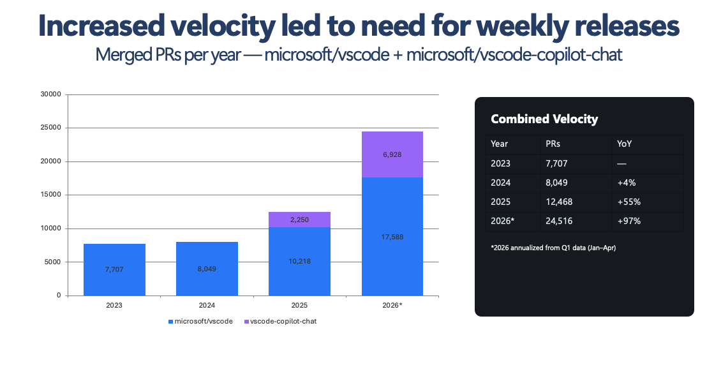
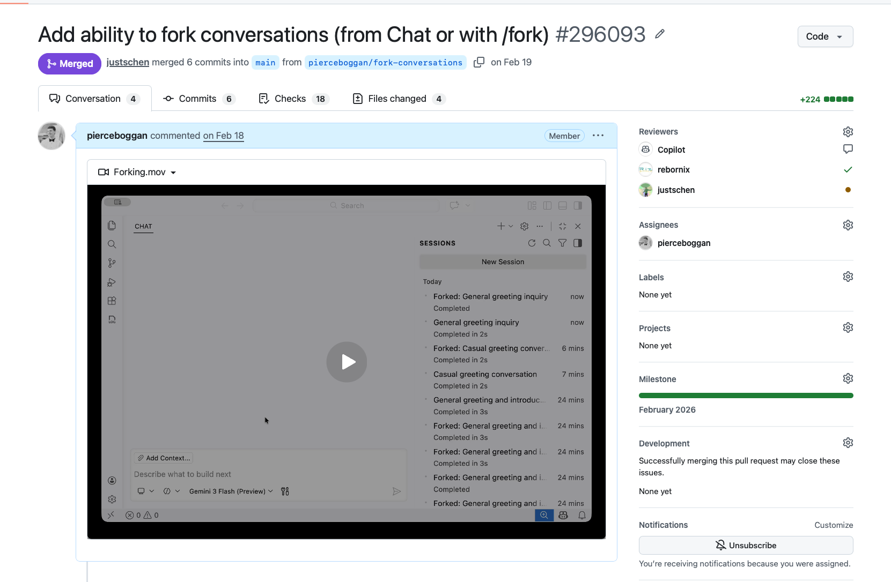

Everyone is a builder.

/researchDeep, exhaustive understanding — before you write a line of code
Activates a specialized agent that explores your codebase, GitHub projects, and the web — produces a comprehensive Markdown report with citations
Reports are saved to your session — share via /share gist research or open in your editor with Ctrl+Y
Designed for exhaustive reporting — architectural diagrams, code references, and cross-module analysis
Pulls from your code, relevant GitHub repos, docs, and the web — always with citations
/planCollaborate with the model on a structured plan before any code is generated
Copilot analyzes your request, asks clarifying questions, and builds a step-by-step implementation plan — you review and approve before work begins
Outlines steps, key decisions, dependencies, and alternatives — prevents misunderstandings before they become expensive rework
Generates a plan.md with todos, dependencies, and considerations — the blueprint for autopilot execution
Review, edit, or reject the plan — once accepted, Copilot executes with confidence
Asking questions generates chain-of-thought reasoning and leads to better results
"Should this handle both REST and GraphQL endpoints?"
"Redis cache vs. in-memory? This affects the deployment story."
"What happens when the session expires mid-request?"
Each question forces the model to think deeper — refining its plan before acting
Break a complex task into parallel subtasks — each managed by its own agent
Each subagent gets its own isolated context window — no interference, no overlap
/tasksTrack progress across all active subagents — pause, reprioritize, or kill as needed
Maximum autonomy — the agent drives, you review the result
No confirmation dialogs — the agent runs commands, edits files, and retries on errors automatically
Structured todo tracking with dependency management — works through complex multi-step tasks
Detects failures, reads error output, and tries alternative approaches — not blind retries
Keeps working until the task is done or it can't progress without your help
Isolate context-heavy workflows — each invoked with custom prompts
Fast codebase research — launches parallel search threads with its own context window
Independent critique — catches bugs, logic errors, and blind spots before you ship
Reviews diffs with high signal-to-noise — only surfaces what genuinely matters
Runs builds, tests, lints in isolation — returns concise pass/fail summaries
Define your own with custom prompts — project-specific knowledge, tools, and workflows
Agents should self-validate their own work — not just write the code
Every session gets its own isolated branch and workspace
main
Each session works in a git worktree — no conflicts between parallel tasks
Run multiple sessions on the same repo without stepping on each other
More PR throughput means your engineering system must be rock-solid
Unit, performance, E2E — agents generate more code, so your test coverage must scale with them
Optimized for time — fast CI is the difference between agents shipping in minutes vs. hours
Human review does not scale — use AI-assisted review to maintain quality at higher throughput
Keep in sync with AI — documentation, product pages, and specs should update alongside code
Too many to manually triage — you need an AI triage strategy to keep up with volume
Your primary constraint becomes determining what to build next.
Features that took weeks now ship in hours — planning and taste become the bottleneck, not execution
You become the orchestrator — directing, reviewing, and steering a fleet of specialized agents
Choose the right model for the task — Claude, GPT, Gemini — swap mid-session
Same agent capabilities whether you're in the editor or terminal